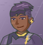
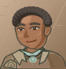
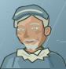
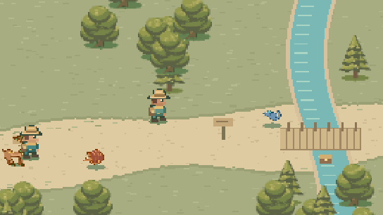

Rotate the greenhouse irrigation channels to open a path
through the vines. Fern’s team wears opponents down with
status effects and recovery.
Canopy Badge · Vine-clearing equipment
Tideglass Gym / Tide
Leader Marina
Change the aquarium’s water level to align its floating
walkways. Marina keeps her team afloat with defensive
switches and weather support.
Current Badge · Water traversal
Cindermill Gym / Flame
Leader Calder
Work the furnace switches to cross the ceramics foundry.
Calder favours steady offensive pressure.
Ember Badge · Heavy-object movement

Voltspire Gym / Storm
Leader Iona
Connect the power station circuits to bring its lifts
online. Iona controls the pace with speed changes and
disruptive conditions.
Dynamo Badge · Expanded fast travel

Slatehaven Gym / Stone
Leader Petra
Shift the quarry museum’s fossil displays onto their
pressure plates. Petra gives her durable partners time to
build their defences.
Strata Badge · Climbing equipment

Frostmere Gym / Frost
Leader Soren
Slide between frozen mechanisms and turn the observatory
mirrors. Soren builds his attacks around the changing
weather.
Crystal Badge · High mountain pass
Veilmarket Gym / Spirit
Leader Nyra
Change the stage lights to reveal doors in the theatre’s
shadow scenery. Nyra uses misdirection and delayed effects.
Lantern Badge · Hidden ruin passages
Astral Crown Gym / Radiance
Leader Solenne
Connect the conservatory’s constellations to cross its
floating platforms. Solenne tests your whole team before the
observatory finale.
Zenith Badge · Championship qualification
Beyond the eighth badge, the Asterra Championship awaits with four
specialists and a champion.
Expedition manual / Research division
In the field

Potters’ Towpath · Kilnway Canal
Set out from Brinewick Village to catalogue 300 species across
ten habitats. Track the Stilllight Society to the dormant
observatory as you earn your League badges.
How do I move and interact?
Walk with WASD or the arrow keys. Press
E or Enter to interact,
M for the map, Tab for your party
and Esc for the expedition menu.
Click or tap a destination to walk there. Touch devices
also have a directional pad and an interaction button.
How do battles and captures work?
Each turn, choose a move, switch your active creature or
use an item. Check the element matchup and your available
energy. Lower a wild creature’s health or inflict a status
condition to improve your capsule’s chances.
Where is my progress saved?
The game autosaves in this browser at safe milestones.
Open
Expedition menu → Save → Export backup to
keep a copy or carry your team to another device. Use
Import backup to restore it.
Can I play offline?
Download the standalone game
and open it in a modern browser. To continue a web
expedition offline, export your save first and import it
in the downloaded game.